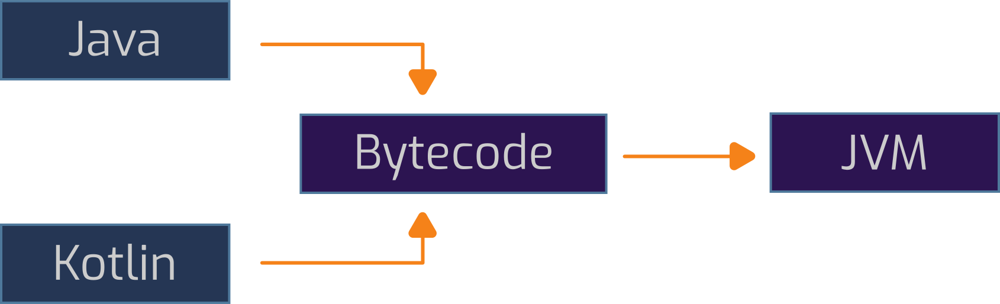
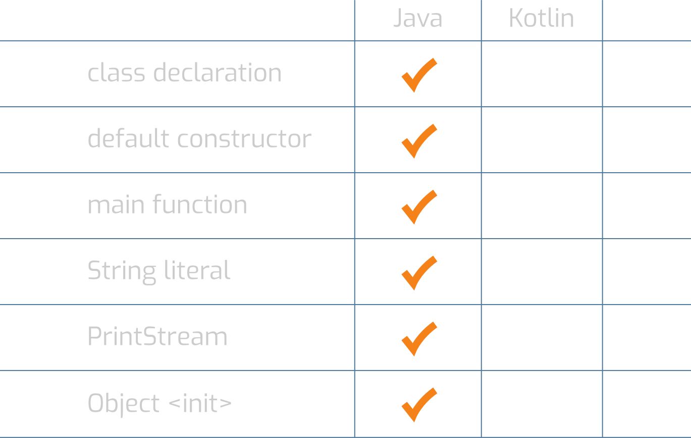
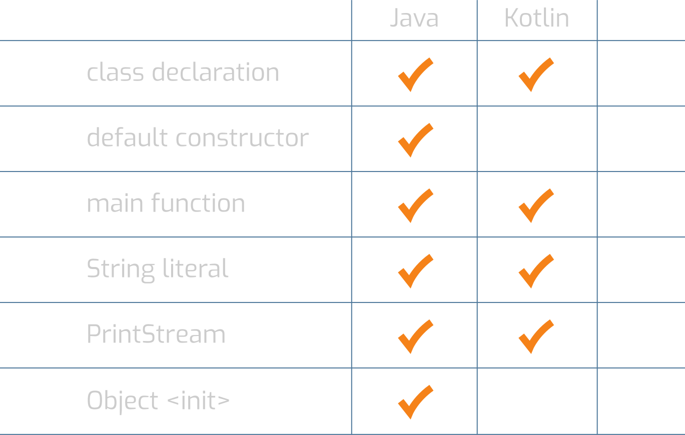

- Simon Schell
- Java, Kotlin, Typescript
- Provinzial Rheinland, Solt

javap -v HelloWorld.class
public final class com.javaexamples.HelloWorld
minor version: 0
major version: 55
flags: ACC_PUBLIC, ACC_FINAL, ACC_SUPER
Code:
stack=2, locals=1, args_size=1
0: aload_0
1: ldc #9
package com.javaexamples;
public final class HelloWorld {
public static void main(String[] args) {
System.out.println("Hello Java!");
}
}
public final class com.javaexamples.HelloWorld
minor version: 0
major version: 55
flags: ACC_PUBLIC, ACC_FINAL, ACC_SUPER
Constant pool:
#1 = Methodref #6.#20
// java/lang/Object."<init>":()V
#2 = Fieldref #21.#22
// java/lang/System.out:Ljava/io/PrintStream;
#3 = String #23 // Hello Java!
#4 = Methodref #24.#25
// java/io/PrintStream.println:(Ljava/lang/String;)V
#5 = Class #26 // com/javaexamples/HelloWorld
#6 = Class #27 // java/lang/Object
public final class com.javaexamples.HelloWorld {
public com.javaexamples.HelloWorld();
Code:
0: aload_0
1: invokespecial #1
// Method java/lang/Object."<init>":()V
4: return
public static void main(java.lang.String[]);
Code:
0: getstatic #2
// Field java/lang/System.out:Ljava/io/PrintStream;
3: ldc #3 // String Hello Java!
5: invokevirtual #4
// Method java/io/PrintStream.println:(Ljava/lang/String;)V
8: return
}
fun main(args: Array<String>) {
System.out.println("Hello Kotlin!")
}


HelloWorldKt.class
SourceFile: "HelloWorld.kt"
RuntimeVisibleAnnotations:
0: #31(#32=[I#33,I#33,I#34],
#35=[I#33,I#36,I#37],
#38=I#39,#40=[s#41],
#42=[s#5,s#43,s#8,s#43,s#43,s#6,s#44])
#38 = Utf8 k
#39 = Integer 2
public final class com.kotlinexamples.HelloWorldKt {
public static final void main(java.lang.String[]);
Code:
0: aload_0
1: ldc #9 // String args
3: invokestatic #15
// Method kotlin/jvm/internal/Intrinsics.checkParameterIsNotNull:
// (Ljava/lang/Object;Ljava/lang/String;)V
6: getstatic #21
// Field java/lang/System.out:Ljava/io/PrintStream;
9: ldc #23 // String Hello Kotlin!
11: invokevirtual #29
// Method java/io/PrintStream.println:(Ljava/lang/String;)V
14: return
}
fun main() { println("Hello Kotlin") }
public final class com.kotlinexamples.HelloWorld2Kt {
public static final void main();
Code:
0: ldc #11 // String Hello Kotlin
2: astore_0
2: iconst_0
3: istore_1
4: getstatic #15
// Field java/lang/System.out:Ljava/io/PrintStream;
...
public static void main(java.lang.String[]);
Code:
0: invokestatic #9 // Method main:()V
3: return
}
- Email: simonschell@solt-it.com
- Twitter: @SoSayethSimon
- Github: SoSayethSimon
- Repo: https://github.com/SoSayethSimon/dissecting-helloworld